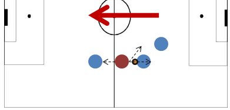
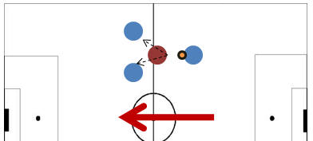
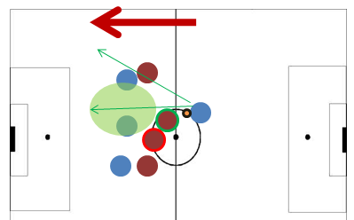
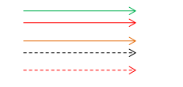
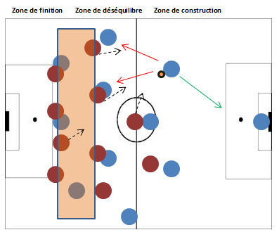
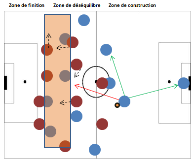
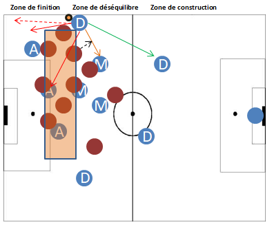
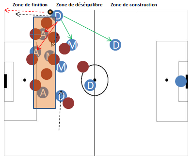
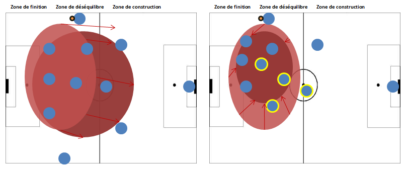
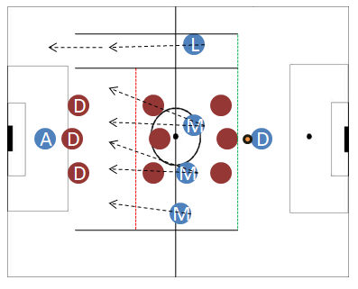

Il est totalement possible d'avoir une emprise défensive tout en ayant la possession du ballon dans les derniers mètres adverses. Tout est une question de culture tactique et d'une animation de jeu cohérente. Une animation collective proposant des ouvertures au porteur de balle tout en concentrant toute l'attention de l'adversaire sur leurs actions défensives. Il est important aussi de comprendre la structure d'une organisation collective afin de mieux pouvoir attaquer. Ici, vous allez comprendre une technique afin de perforer une défense. L'une des meilleures façons de disloquer une ligne défensive. Le principe L'objectif est de réduire le pourcentage de réussite de transition adverse en l'obligeant l'adversaire à utiliser le "recule frein" ou du moins, à ne pas sortir sur le porteur de balle. (la flèche représente le sens du jeu)  En temps normal, l'utilisation d'un joueur en soutient est systématique, afin de pouvoir assurer une solidité défensive. Le problème de cette philosophie est qu'une passe vers l'avant devient plus compliquée à réaliser, car le défenseur (rouge) à des multiples options afin d'intervenir : Marquer son attaquant Sortir sur le porteur de balle Orienter le jeu grâce à son positionnement  Ici, les solutions du défenseur (rouge) sont réduites et il est obligé de sortir pour empêcher la transmission. Les difficultés de cette mise en place : Les joueurs bleus doivent être dotés d'une bonne qualité technique Savoir jouer des deux pieds, effectuer un contrôle et effectuer une passe Prendre des informations en continue de la position des joueurs sur le terrain  Ce "risque" est complètement applicable sur une rencontre, car même sans une couverture. Les défenseurs (rouge) ne peuvent pas tous sortir sur le porteur de balle (risquant de laisser les bleus démarqués sur le terrain). Suivant les principes français. C'est au défenseur (vert) de sortir sur le porteur de balle, automatiquement suivi d'une couverture (défenseur bordeaux-rouge). Cette situation libère de l'espace et des ouvertures dans le dos du défenseur en sortie défensive. Dans cette progression vers l'avant la sécurité du porteur de balle (bleu) à été le surnombre dans la première ligne défensive, car ce surnombre oblige les défenseurs à défendre en sécurisant leur structure défensive. L'application Légende : L'équipe qui défendL'équipe qui attaqueLe statut du joueur, M = Milieu/ D = Défenseur / A = Attaquant / L = Latéral / Etc.Le ballon  (flèche verte) passe facile (flèche rouge) passe compliquée (dur techniquement), impossible, risque de perte de balle, ou non productive (flèche orange) passe compliquée avec faible risque de perte de balle (pointillé noir) déplacement du joueur possible (pointillé rouge) déplacement compliqué voire impossible (système de jeu à 2 centraux 2 latéraux 1 milieu défensive) (les positions des joueurs son une compilation des moyennes de positionnement analysé)  De manière classique, avoir peu de joueur (bleu) entre les lignes réduit les possibilités au porteur du ballon qui est obligé de multiplier les passes horizontales ou risqué.  Avec des joueurs cherchant à s'introduire dans la première ligne défensive adverse. Les milieux (rouge) sont dans l'obligation de réduire les possibilités de transmissions des joueurs bleus. En réduisant ses possibilités. Il est compliqué de sortir sur le porteur du ballon, et simultanément, prendre en marquage les 9 autres joueurs de champ bleu. L'équipe rouge est obligée de réduire l'espace entre les deux lignes pour éviter d'être débordé. Ce qui automatiquement, fait reculer tout le bloc équipe (rouge). Donnant la possibilité à l'équipe bleue de s'installer dans les 35 derniers mètres adverses favorisant les chances d'obtenir un tire en direction du but. Comment arrivé à appliquer cette méthode sur une animation de jeu ? Il est commun de prendre toute l'amplitude du terrain lors d'une possession de balle. Afin d'étirer le bloc adverse. (image 1)  Ici, l'espace à été réduit entre les lignes (rectangle rouge) et les solutions de passe sont limitées. Les solutions pour le porteur de balle sont réduites dû à la sortie défensive adverse. Pas de possibilité d'excentrer pour effectuer un centre Pas de passe vers l'axe du terrain Pas de passe vers la surface adverse Dans cette configuration, l'évolution de l'action est entièrement basée sur le talent et la faculté du porteur de balle à faire la différence, ou parfois, celle du joueur avec qui il va combiner pour conclure l'offensive. (image 2)  Ici, les solutions axiales restent réduites et minimes. Mais grâce à cette disposition des joueurs : Le jeu court en une touche est favorisé Le débordement du porteur de balle est possible La défense va obligatoirement courir après le ballon sans aller sur le porteur du ballon. (Si le porteur du ballon à les qualités pour jouer rapidement). Mais qui va créer l'amplitude sur les phases de possessions hautes afin de ne pas étouffer mon équipe sous le pressing adverse ? Sur l'image 1, de manière classique, c'est le latéral qui vas écarter le jeu adverse avec l'aide du défenseur central droit. Sur l'image 2, C'est au défenseur central gauche de tirer le bloc adverse. Mais ce mouvement est délicat, car c'est le latéral gauche qui doit équilibrer la structure offensive en repiquant dans l'axe (par la même occasion attirer son adversaire direct) Le milieu défensif doit complètement rentré sur l'espace de son milieu relayeur et ce dernier (milieu central droit, milieu le plus avancé sur la représentation) doit rentrer entre les lignes sans espéré recevoir le ballon, mais dans l'objectif de contraindre l'adversaire à défendre sans sortir (rapidement) sur le porteur de balle. L'ailier doit lui aussi rentrer dans les lignes laissant l'avant-centre seul. Ce déplacement crée une ouverture sur l'extérieur du terrain donnant des solutions multiples au porteur du ballon, parallèlement ce nombre de possibilités va faire reculer le bloc adverse. les conditions d'utilisation Il est important que le porteur de balle ne reste pas inactif plus de 2 secondes (Exemple: dans l'attente d'un déplacement de son coéquipier). Il est important de savoir à qui on va transmettre le ballon avant de le contrôler soi-même. Il est important d'avoir des joueurs aillant la faculté de contrôler la balle des deux pieds. Il est important de jouer en une touche sur une courte distance. Ne pas avoir peur de jouer sous la pression.  À gauche, on peut constater le potentiel d’extension qu'offre une animation classique (avec des triangles de transmissions entre les joueurs) À droite, le potentiel d'évolution d'un bloc équipe qui suit le comportement d'un effectif cherchant à jour sur des petits espaces. On remarque qu'elle (équipe rouge) défend sur un espace du terrain encore plus réduit. Un exemple d'exercice afin d'améliorer cette animation offensive [1/14]  6 contre 9 défenseurs. Les conditions Les dimensions du terrain, ne sont pas définies. (note: plus le terrain est réduit, plus la difficulté est présente. Un rectangle avec tous les joueurs avec un but à l'extrémité. Un couloir avec une voix réservé exclusivement au latéral. Les règles Le ballon peut franchir toutes les lignes de l'exercice. Le joueur évoluant en défenseur (D) commence la balle au pied, il n'a pas le droit de franchir les lignes de l'exercice (vert, rouge, noir) Les milieux bleus ne peuvent pas franchir la ligne verte, ni prendre le couloir Le couloir est réservé exclusivement au latéral (L) et à la circulation du ballon. L'attaquant bleu (A) doit chercher à étirer au maximum le bloc adverse Le latéral peut uniquement redonner le ballon dans la zone où il l'a reçu (exemple: il la reçoit entre la zone verte et rouge, il la redonne que dans cette zone) Les passes en retrait sont autorisées, une passe qui arrive sur le défenseur bleu (D) oblige l'équipe rouge à se replacer à la position de départ (3-3-3 et sur le même endroit). Aucun joueur à le droit de franchir la ligne verte et donc de presser le défenseur. Si le latéral effectue plus de deux passes au défenseur. Un joueur rouge quitte l'exercice. L'équipe rouge, ne peut pas rentrer dans le couloir du latéral, ni quitté les zones de l'exercice. La seule ligne qu'ils peuvent franchir est la rouge. L'équipe rouge, doit éviter de prendre un but et de voir l'adversaire faire une passe au défenseur bleu (D). À la récupération du ballon, l'objectif est de mettre un but avec le moins de passe possible, (sur moins de trois passes) se qui vas faire basculer l'équipe bleu en rouge. Si le latéral bleu (L) à le ballon entre la zone verte et rouge les défenseurs (rouge) ne peuvent pas passer la ligne rouge. Les défenseurs rouges sont libres de tout mouvement, mais dès lors que le latéral a le ballon, ils doivent reculer au minimum derrière la ligne rouge. L'objectif, mis en place L'équipe bleue doit inscrire le plus de but, en essayant de toujours trouver un coéquipier dans le dos de l’adversaire, car dans leur dos, généralement des rouges seront présent. Tout type de passe est autorisé, longue, lobé, courte, etc. Le principe de cet exercice: faire reculer le pressing des joueurs rouges grâce aux joueurs (bleus) qui ne portent pas le ballon. L'exercice se concentre sur eux ! Sur leurs facultés a se démarquer dans les lignes adverses. L'importance du latéral est primordiale. Elle permet d'éviter une concentration du bloc rouge sur les joueurs bleus (en infériorité numérique). Car, le latéral peut effectuer une passe au défenseur (D) libre de tout marquage, obligeant les joueurs rouges à évoluer (pour "couper les lignes") de manière très étendu. Le latéral est susceptible de toucher énormément de ballon.